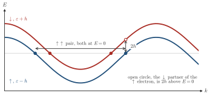

Advanced Quantum Materials 2027 · All lectures · Lecture notes
Session 5. Superconductivity, Nambu Representation and Majorana Physics
5.12 Building a spin-triplet superconductor out of a magnet
Since spin-triplet order is so fragile, how could we ever build one on purpose? One way is a toy model that has both a ferromagnetic exchange field and an attractive interaction in the same Hamiltonian,
\[H = -t\sum_{\langle ij\rangle,\sigma}c_{i\sigma}^\dagger c_{j\sigma} \;\underbrace{-\, h\sum_i \left(c_{i\uparrow}^\dagger c_{i\uparrow} - c_{i\downarrow}^\dagger c_{i\downarrow}\right)}_{\text{exchange field}} \;+\; \underbrace{U\sum_{\langle ij\rangle} c_{i\sigma}^\dagger c_{j\sigma'}^\dagger c_{j\sigma'}c_{i\sigma}}_{\text{attractive interaction}}, \qquad U<0.\]
If we solve it self-consistently at the mean-field level, both order parameters, the ferromagnetic exchange field and the pairing amplitude, can be nonzero at the same time. The ground state then breaks both time-reversal symmetry, since it is magnetic, and gauge symmetry, since it is superconducting. The pairing that survives is necessarily spin-triplet, because the exchange field explicitly splits the \(\uparrow\) and \(\downarrow\) Fermi surfaces, and in this way it suppresses the singlet channel, which needs them to be degenerate. Physically, s-wave singlet pairing is usually the leading instability because it can gap the entire Fermi surface, which gives the largest condensation energy. When the exchange field suppresses this channel, a different pairing channel becomes the leading instability instead, which here is the odd-parity, spin-triplet channel, which is effectively p-wave.

In the model of this section, why does the exchange field suppress \(s\)-wave singlet pairing but not the pairing of two \(\uparrow\) electrons?
Show the answer
The correct option is B.
A pair at the Fermi level needs both electrons at zero energy. The field shifts the two spins by opposite amounts, so the partners of an \(\uparrow\downarrow\) pair cannot both sit on their Fermi surfaces. Two \(\uparrow\) electrons share one band, and they can.
The most interesting feature of this state appears when we put it on a finite ribbon instead of an infinite plane. The bulk spectrum is gapped, as we expect for a superconductor, but the edges of the ribbon have gapless excitations. A superconductor that is fully gapped in the bulk and gapless at the edge is a signature that we already know from the topological-band-structure and quantum-Hall sessions. Indeed, these edge modes have a topological origin, and they are tied to a finite Chern number of the underlying BdG band structure, in the same way as the edge states of a Chern insulator were tied to its Chern number.
Notebook check-in: session5.ipynb, “The impact of a spin splitting in an electronic structure” (Reminder), “A spin triplet superconductor” (Core), “Majorana modes in a spin triplet superconductor” (Challenge), “Interaction-induced spin-triplet superconductivity” (Challenge), and “Topological modes in interaction-driven spin triplet superconductors”
Start from the plain spin-split band structure, with only an exchange field, to build intuition. Then run the self-consistency loop for the model above and check that a spin-triplet \(\Delta\) emerges. Move to a ribbon geometry and find the gapless edge modes described here, and then, in the later challenge sections of the notebook, connect them to the Majorana physics of sections 5.15-5.17.
Try it. In the cell, the line h.add_exchange([0.,0.,1.0]) splits the two spin bands of the chain. Change 1.0 to 2.0. The two bands move apart from 2 to 4 at a fixed momentum, so each spin has its own Fermi momentum.